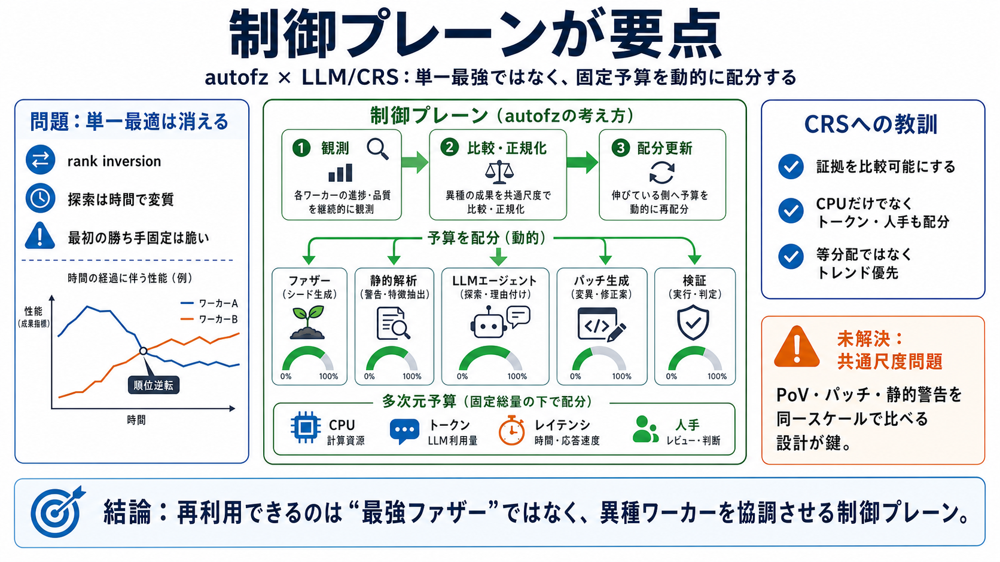

autofz: Automated Fuzzer Composition at Runtime
We propose an automated, yet non-intrusive meta-fuzzer, called autofz, to maximize the benefits of existing state-of-the…

autofzを「新しいファジング手法」ではなく、異種ワーカーへ固定予算を配分する制御問題として読み直します（制御プレーン＝control plane / 計画・統括層）。
同じキャンペーンでも、どのファジングが進んでいるかは時間とともに入れ替わります（rank inversion）。「最初に選んだ最強」が後半で最強になりません。
ファジングを「料理人」、CPU予算を「火加減」と見なすと、問題は最強のレシピ探しではなく、今一番伸びる料理人へ“次の時間”を渡す判断になります。
autofzの中核は、メタファジング（meta-fuzzing）として複数ワーカーを統括し、「準備フェーズで比較→焦点フェーズで配分更新」を回す制御プレーンです。
種（seeds）の同期により、あるワーカーで見つかった成果を別ワーカーの起点へ変換し、協調効果を狙います。
「プログラム単位」ではなく「ワークロード単位」で考えるべきです。探索空間は時間で変わるため、最適配分も時間で変わります（ワークロード＝探索状態の文脈）。
著者は「勝ったか」より「スケジューリング判断が妥当か」を問います。準備後の状態をスナップショット化し、多数回復元して代替案と競争させました。
類似点は「ワーカーがファザーでない」だけで、制御の論点（比較可能な証拠・固定予算下の配分判断）は同型です。LLM/CRSではワーカーが増え、判断が難しくなります。
CRSの予算はCPUだけでなく、トークン・レイテンシ・人手まで含みます。だからこそ制御プレーンの設計が増幅します。
seed共有だけでは不十分です。固定予算下では「どのワーカーへCPUを割り当てるか」が別問題で、ワーカー増は測定・同期コストも増やします。
CRSではカバレッジのような安価で共通のフィードバックがないため、制御プレーンを同型に移植できる保証が弱い点が未解決です。
ファジング研究は死んだのではなく役割が変わっています。実運用ではCRSが増え、ファジングの強みは“動的証拠を安価に作る”ことになります。
単一の最強ファザではなく、異種ワーカーを固定予算で協調させる制御プレーンが再利用可能な教訓です（ただし証拠の比較可能性は別途設計が必要）。
We propose an automated, yet non-intrusive meta-fuzzer, called autofz, to maximize the benefits of existing state-of-the…
Even after taking the preparation phases into account, autofz spent only 22% resources total for the (a) 5-fuzzers (Redq…
autofz is a meta fuzzer for automated fuzzer composition at runtime. Some part of the source code might use `autofuzz` (…
Murakkab: Resource-Efficient Agentic Workflow Orchestration in Cloud Platforms. Gohar Irfan Chaudhry, Esha Choukse, **Ha…
A taxonomy of orchestration patterns comprising three coordination topologies (centralized, decentralized, hierarchical)…